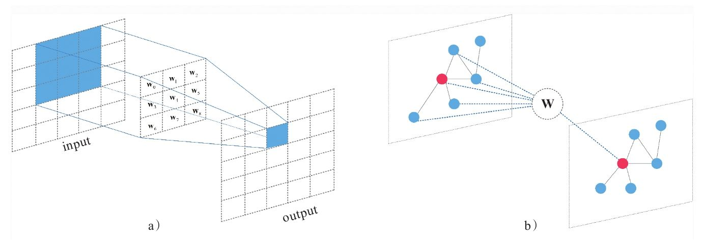
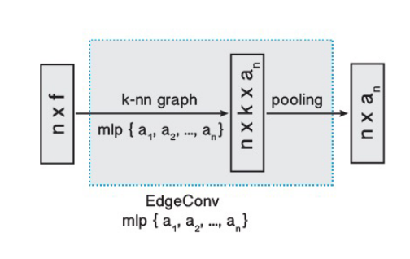
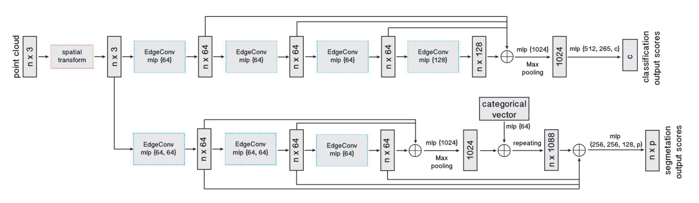
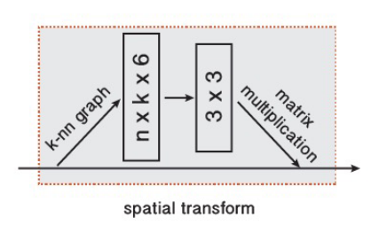

近来饱受专业实习折磨，学习方面，有所懈怠
论文：Dynamic Graph CNN for Learning on Point Clouds
一、摘要及引言
在 PointNet、PointNet++ 中，都没有考虑到点云的拓扑结构，即相邻点之间的邻接关系。如果设计一个能够恢复拓扑结构的模型，应当可以增强网络的表示能力。基于这一想法，论文设计了网络模块 EdgeConv 来提取局部邻域信息和潜在的长距离语义特征。
PointNet 通过在局部邻域内独立地处理点，确保了顺序不变性，然而这种独立性一定程度上忽略了点之间的几何关系，因而难以捕获局部特征。而 EdgeConv 并不从点的嵌入中生成点特征，而是生成了描述点与其邻域内点之间关系的边特征，并且对邻域内点的排序具有不变性。同时 EdgeConv 易于嵌入到现有网络中。论文将其集成到 PointNet 中，得到了很好的性能。
二、方法
图卷积神经网络（Graphic Convolutional Neural Networks，GCN）
由于文章借鉴了图卷积神经网络，因此简单了解了一下图卷积的原理。与 CNN 相比，GCN 主要应用于图数据。也就是节点和边组成的图形。当然图像也是一种特殊的图形，它具有规整的结构。而在特征嵌入方面，两者都是局部连接，并且卷积核权重处处共享。因此 GCN 与 CNN 思想上是基本一致的，只不过应用场景不同。相比之下，GCN 所处理的数据结构会更复杂。

边卷积（Edge Convolution）
基本原理
利用点云能够生成的最简单的图，大概是体素连通性分割里的体素邻接图。但论文所使用的方法有所区别于 GCN，因为它会在每一层根据新的特征序列，重新计算节点的邻接关系。不同于使用空间距离构建的图，这样做意味着图会动态更新，即每个点的 $k$ 近邻点会在不同层之间发生变化。这使得非局部（non-local）信息能够得到扩散。下面阐述 EdgeConv 具体架构。
将数量为 $n$ 的 $F$ 维点云记作 $\mathbf{X}=\left\{\mathbf{x}_1, \ldots, \mathbf{x}_n\right\} \subseteq \mathbb{R}^F$ ，令 $F=3$ ，则每个点包含三维坐标 $\mathbf{x}=(x_i,y_i,z_i)$ ，也可以包含颜色、法线等附加特征。因此 $F$ 更一般的含义是点特征。
引入一个有向图 $\mathcal{G}=(\mathcal{V}, \mathcal{E})$ 来表示局部点云结构，其中 $\mathcal{V}=\{1, \ldots, n\}$ , $ \mathcal{E} \subseteq \mathcal{V} \times \mathcal{V}$ ，分别表示节点和边，最简单的 $\mathcal{G}$ 是 $k$ 近邻图。图中包含了自环（self-loop），即每个节点也会指向自己。论文定义了以 $\mathbf{x}_i,\mathbf{x}_j$ 为端点的边缘的特征：
其中 $h_{\boldsymbol{\Theta}}: \mathbb{R}^F \times \mathbb{R}^F \rightarrow \mathbb{R}^{F^{\prime}}$ 是一个非线性函数，$\Theta$ 为一组可学习优化的参数。
最后，将边缘特征定义为由顶点出发的所有边特征的聚合，聚合方式为对称函数（如求和或者池化），论文里记作一个令人费解的正方形：
类比于图像卷积， $\mathbf{x}_i$ 为中心像点，$\{\mathbf{x}_j:(i,j)\in\mathcal{E}\}$ 为其邻域内像点。总之，给定一个 $F$ 维的点云，EdgeConv 将其转换为点数不变的 $F’$ 维点云。

函数的选择
在 EdgeConv 中主要涉及到两个函数的选取：$h$ 和 $\square$ 。若 $\mathbf{x}_1,\dots,\mathbf{x}_n$ 是规则网格上的图像像素，而图 $\mathcal{G}$ 中表示了每个像素周围固定大小的块的连通性，同时选取边缘函数为 $\Theta_m\cdot\mathbf{x}_j$ ，聚合操作为求和函数，就得到了标准的卷积操作：
这个表示的细节就不深究了，个人感觉和一般说的 CNN 不太一样，因为这里似乎对所有邻域内的点都共享了权重。
后面论文列举了很多函数的选取，都比较常规，这里不再赘述。论文所采用的函数如下所示:
不同于 PointNet 中共享的 MLP ，这种特征提取方式考虑了边特征。论文中说可以用共享 MLP 实现，但我还没想明白如何做到的。
动态图更新（Dynamic Graph Update）
论文再次强调了在特征空间中定义图形的优势，即使得感受野和点云直径一样大，并且是稀疏的。用人话说就是不局限在周边点，还会将点云中其它具有相似特征的点纳入到感受野中。在具体实现中，计算了特征空间中的成对距离矩阵，从而为每个点提取最近的 $k$ 个点。
特性
主要包括置换不变性和平移不变性。置换不变性就不必多说了，平移不变性则来自于 $h$ 函数。若对点云进行平移操作 $T$ ，则特征值变为：
当 $\boldsymbol{\phi}_m=0$ 时，算子对平移是完全不变的。然而这会导致模型的简化，patches 的位置信息被忽略。以 $\mathbf{x}_j-\mathbf{x}_i$ 和 $\mathbf{x}_i$ 作为输入，既能保留全局形状信息，也能考虑到局部几何关系。
三、模型架构

变换块（Point cloud transform block）

在架构的最开始，对点云应用一个 $3\times 3$ 的矩阵变换以将其对齐。这和 PointNet 中的 T-Net 想法类似。为了学习到变换矩阵参数，构建了 $k$ 近邻图，并提取了每个点与其相邻点的坐标差张量。
分类
输入为变换后 $n$ 个点的坐标，在 EdgeConv 中为每个点计算大小为 $k$ 的边特征集合，通过 MLP 扩展并聚合每个集合中的特征。不同于 PointNet++ 里的下采样，EdgeConv 并不改变点的大小和顺序，因此在多级特征组合的时候更为便利。
四个 EdgeConv 层使用了三个共享的全连接层 $(64,64,128,256)$ ，并根据每个 EdgeConv 输出的特征重新计算图，将其应用于下一层。将这几层的输出连接后得到 $512$ 维的特征，通过一个 MLP 和池化操作将其扩展到 $1024$ 维，并进行池化操作，最终通过一系列 MLP 得到点云全局特征。
对于超参数 $k$ 的选取，采用了留出验证的方式来评估不同 $k$ 对模型性能的影响。
分割
分割不同于分类的点无非在于需要同时用到每个点的全局信息和局部信息。论文采用了非常类似于 PointNet 的方法，将多层 EdgeConv 得到的全局特征（和分类部分类似）与 MLP 处理后的分类张量（categorical vector） 相连接，得到 $1088$ 维的特征，并与前面每一层 EdgeConv 的输出相连接。最后通过一些列 MLP 将特征压缩到需要的维数。
有待确认的是，架构图中的 categorical vector 具体来自于哪一层，论文中似乎没有具体说明。
四、总结
关于 DGCNN ，主要需要关注的有以下几点：
- 考虑了点云的拓扑结构（个人觉得 PointNet++ 实际上也包含了简单的拓扑关系，但 DGCNN 的动态图使得其可能学到的更多），关注了边特征；
- EdgeConv 通过 MLP 提取边特征，通过池化来确保邻域内的置换不变性；
- 图的构建基于特征空间，在每一层对图进行更新，即所谓的动态图。这种方式让感受野变得更大、更稀疏；
- EdgeConv 很容易嵌入到其它网络中；
- 整体架构类似于 PointNet ，也就是用 EdgeConv 替换了 PointNet 中的共享 MLP 层；
与 PointNet 及 PointNet++ 的对比：
- PointNet 是 DGCNN 的一个特例，即当 $k=1$ 时，边集为空集，边缘函数 $h$ 为 $h_{\Theta}(\mathbf{x}_i,\mathbf{x}_j)=h_{\Theta}(\mathbf{x}_i)$ 。换言之， PointNet 是不考虑边特征、不考虑拓扑关系的 DGCNN ；
- PointNet++ 的主要组件是 SA 层，分为下采样和 PointNet 层，每一次输出后点数减少；EdgeConv 也考虑了点的邻域，但不改变点数，因此在特征组合时无需上采样。当然 PointNet++ 也可以取消采样层从而保持点数不变，但这不是分层的本意；
- PointNet++ 利用 PointNet 层来聚合局部信息， PointNet 能够对邻域内每个点特征进行编码然后池化；EdgeConv 则对边特征进行编码，而非每个点单独的特征；